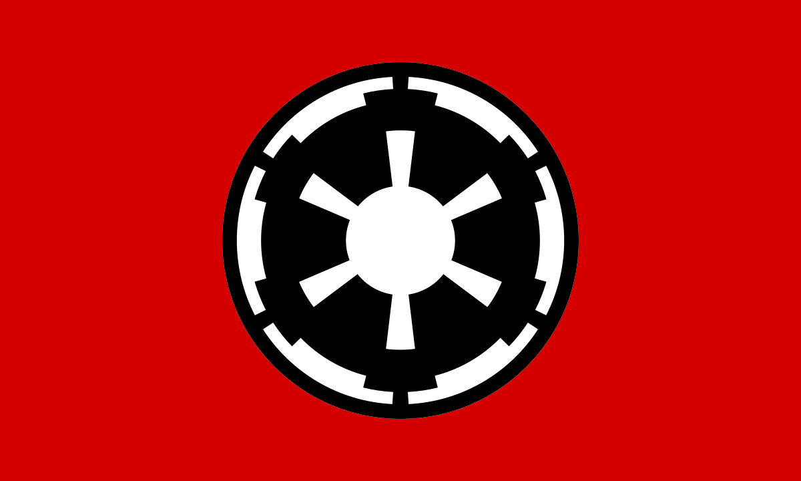

Sith Factions
Galactic Empire
Leader: Emperor Palpatine aka. Darth Sidious 19 BBY - 4 ABY
Capital Planet: Coruscant
Date Established: 19 BBY (Before Battle of Yavin = Before "A New Hope")
Date Dissolved: 5 ABY (After the Battle of Yavin)
After the Galactic Republic was Reorganized by Palpatine it became known as the Galactic Empire. the Galactic Empire is a Fascist dictatorship that hated every non-human species and enslaved, cleansed or just exploited them.
The Galactic Empire had a Huge Military with a massive fleet made out of several thousand Star Destroyer, they even possessed a planet destroying space station called the death star, but that was destroyed by the Rebel alliance in 0 ABY. After the battle of Endor the emperor was killed on the second death star and the Empire began to crumble. The remaining pieces of the Empire either retreated into the unknown regions of the Galaxy or Formed the First Order
First Order

Leader: Emperor Palpatine 5 BBY - 35 BBY (in secret), Grandleader Snoke 5 BBY - 34 BBY, Kilo Ren 34 BBY - 35 BBY
Capital Planet: Starkiller Base
Date Established: 5 ABY
Date Dissolved: 35 ABY
The First order was made up of the remnants of the Galactic Empire and also had a huge fleet with a weapon built into a Planet that could destroy Planets, with that Weapon they Completely destroyed the new Galactic Republic. After that the weapon was destroyed by the Resistance.
Emperor Palpatine, who survived the Battle of Endor and hid on the Sith world Exegol, ruled the First Order from the shadows trough grandleader Snoke, wo also was a disfigured clone of him, after Snoke was killed by Kilo he reveals that he is alive in hopes kilo would come to him so he can persuade kilo to join him. The First Order was defeated on Exegol together with Palpatine who was killed by Rey